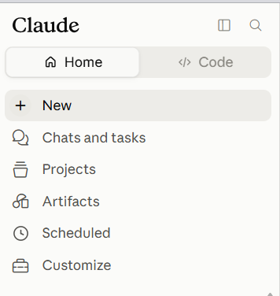
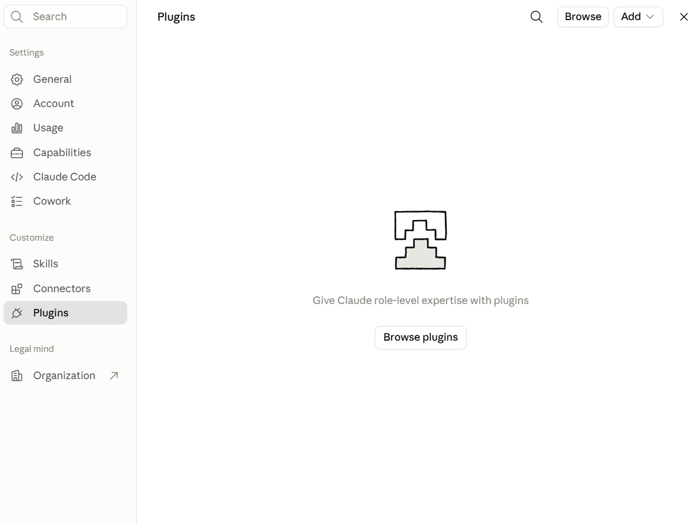
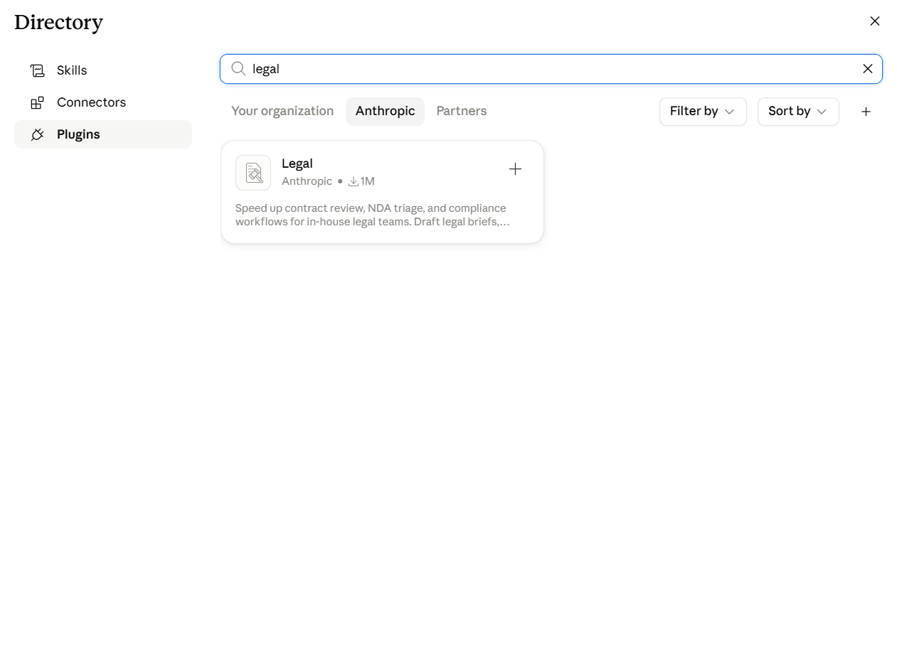
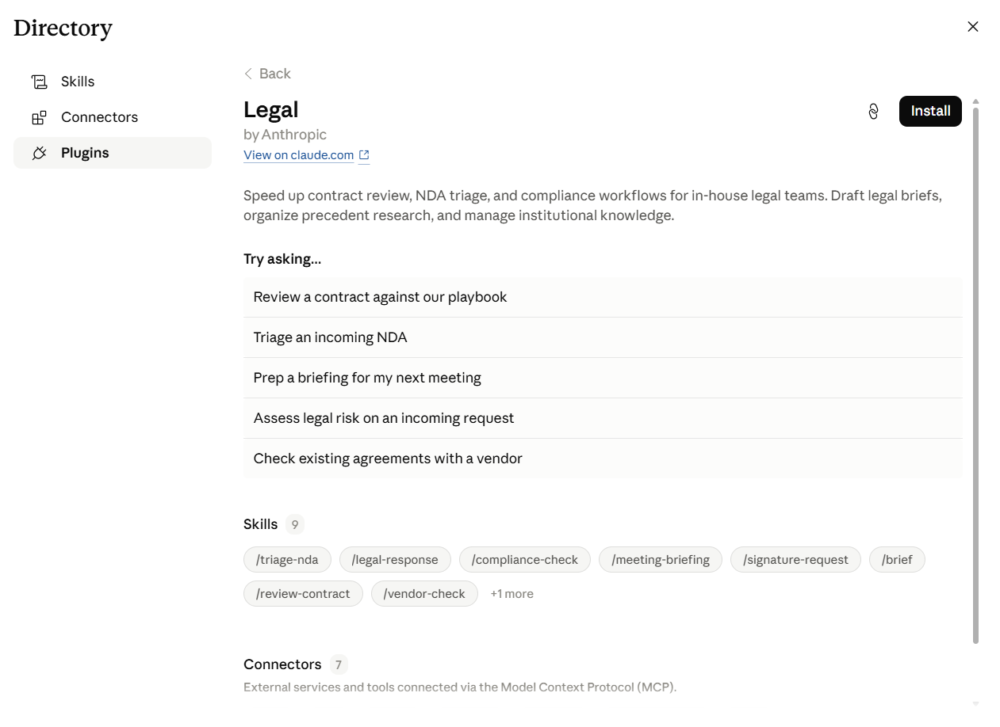
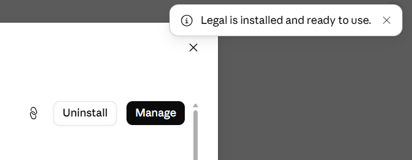

01
מהו Plugin: הסבר מלא ומעמיק
התשובה הקצרה ביותר: Plugin הוא חבילה מוכנה, שמתקינים בלחיצה אחת, והיא הופכת את Claude שלכם למומחה מיידי בתחום עיסוק מסוים, כמו עבודה משפטית. ברגע שהיא מותקנת, יש לכם באופן קבוע קבוצה שלמה של פקודות מוכנות לתחום הזה, במקום שיחה כללית שבה צריך להסביר מחדש בכל פעם מה בדיוק רוצים ואיך בדיוק לעשות את זה.
מה בדיוק יש בתוך Plugin
הכי קל לחשוב על Plugin כעל תיקייה סגורה ומסודרת, שמישהו אחר כבר ארז בשבילכם. בתוך התיקייה הזאת יש שני סוגי תכולה אפשריים:
- קבוצה של הוראות עבודה מוכנות, שכל אחת מהן מלמדת את Claude לבצע משימה ספציפית אחת בדיוק באותה צורה בכל פעם. בפרק הבא נסביר את המונח המדויק לזה, ואיך הוא שונה מ-Plugin עצמו.
- לפעמים גם חיבורים אופציונליים למערכות חיצוניות אמיתיות שהמשרד כבר משתמש בהן, כמו תיבת מייל או יומן. חיבורים כאלה תמיד דורשים אישור נפרד ומפורש, הם לא פעילים אוטומטית רק כי ה-Plugin מותקן.
המשמעות המעשית: Plugin אחד יכול להכיל בתוכו תשעה, עשרה או יותר כלים כאלה, כשכולם כבר מתואמים זה עם זה מראש, ומוכנים לשימוש מיד אחרי התקנה אחת בודדת.
מי בונה Plugin, ומאיפה הוא מגיע
ל-Plugin תמיד יש מפרסם: הגורם שבנה אותו ואחראי לתוכן שלו. יכולים להיות ארבעה סוגי מפרסמים:
- Anthropic עצמה, החברה שמפתחת את Claude. זה המקרה של ה-Plugin שנתקין בהמשך המדריך הזה.
- חברות שותפות (Partners), שבונות Plugins משלהן ומפרסמות אותם דרך אותו קטלוג רשמי.
- המשרד או הארגון שלכם עצמו, אם מנהל המערכת שלכם בנה Plugin פנימי ופרסם אותו רק לעובדי הארגון.
- אתם עצמכם, אם החלטתם לבנות Plugin מותאם אישית. האפשרות הזאת מוסברת בקצרה בפרק האחרון של המדריך הזה.
מה קורה בפועל כשמתקינים Plugin
התקנה של Plugin היא פעולה חד-פעמית, לא הרשמה חוזרת. אחרי שמתקינים אותו פעם אחת, הוא זמין מאותו רגע בכל שיחה חדשה שפותחים בחשבון, בלי צורך להתקין אותו שוב. כל אחד מהכלים שבתוכו מופעל בשתי דרכים אפשריות: או בכתיבת פקודה מפורשת שמתחילה בסימן / (על זה נרחיב במדריך הבא), או בכך שקלוד עצמו מזהה שהבקשה שלכם מתאימה לאחד הכלים ומציע להפעיל אותו.
נקודה חשובה שכדאי לזכור: התקנת Plugin לא משנה את הידע הכללי של Claude ולא הופכת אותו "חכם יותר" באופן גורף. היא רק מוסיפה לו קבוצת הוראות עבודה מובנות לתחום ספציפי, וגישה אופציונלית למערכות חיצוניות אם אישרתם זאת.
מה Plugin הוא לא
כדי שלא יישאר שום בלבול, שווה לומר גם במפורש מה זה לא:
- זה לא תוכנה נפרדת שרצה במקום אחר. הכול קורה בתוך אותה שיחה עם Claude, באותו ממשק שאתם כבר מכירים.
- זה לא מודל בינה מלאכותית אחר או נוסף. Claude נשאר אותו Claude; ה-Plugin רק מכוון אותו איך לבצע משימות מסוימות.
- זה לא תוסף דפדפן, ואין לו שום קשר לתוספים שמכירים מ-Chrome או Firefox. השם דומה במקרה, אבל מדובר במושג שונה לגמרי.
- זה לא פעולה אוטומטית שרצה ברקע בלי שביקשתם. כל כלי בתוך Plugin מופעל רק כשאתם, או קלוד לפי בקשתכם, בוחרים להפעיל אותו.
02
מילון מונחים: מה ההבדל בין Plugin, Skill ו-Connector
Skill
הדרך הכי פשוטה לתאר Skill: זה מעין מתכון לתהליך עבודה שחוזר על עצמו אצלכם במשרד. חושבים על משימה שחוזרת שוב ושוב, כמו בדיקת סעיף אי-תחרות בכל הסכם סודיות, ובמקום להסביר לקלוד מחדש בכל פעם מה לבדוק ואיך, כותבים את ההוראה פעם אחת, ושומרים אותה כ-Skill. מי שכבר בנה Skill מכיר את זה כיחידת הוראה אחת: קובץ שמסביר ל-Claude איך לבצע משימה מסוימת. אתם בונים או מתקינים אותו בשביל משימה ספציפית אחת, והוא נטען אוטומטית ברגע שהוא רלוונטי לבקשה שלכם.
ההבדל מ-Plugin: Skill הוא תמיד כלי בודד אחד, למשימה אחת בלבד. Plugin, שכבר הכרתם בפרק הקודם, הוא התיקייה השלמה שיכולה להכיל בתוכה כמה Skills כאלה יחד, ולפעמים גם Connectors, כשכולם כבר ארוזים ומתואמים מראש בהתקנה אחת.
Connector
Connector הוא הצינור שדרכו Claude יכול לקרוא, ולפעמים גם לכתוב, למערכת אמיתית שהמשרד כבר משתמש בה, כמו Gmail או Slack. בלי חיבור פעיל כזה, Claude יכול לעבוד רק עם מה שהודבק ישירות בתוך השיחה.
03
למה בכלל להתקין Plugin אם כבר יש Skills
Skill מותאם אישית נותן שליטה מדויקת: אתם קובעים בדיוק מה הוא בודק, איך הוא מנוסח, ומה הוא צריך להפיק. אפשר גם לשתף אותו הלאה לבד, בלי צורך בשום דבר נוסף. Plugin נותן משהו אחר: התחלה מהירה. כמה Skills שכבר מתואמים ביניהם, ולפעמים גם עם חיבורים משלהם למערכות חיצוניות, שעובדים יחד כבר מהרגע הראשון שמתקינים אותם.
ההבדל המעשי הכי פשוט: במקום לבנות תשעה Skills בנפרד עבור המשרד, מתקינים Plugin אחד ומקבלים את כל התשעה ביחד, כשהם כבר מכוונים לעבוד זה עם זה.
04
מאיפה אפשר להתקין Plugin, לא רק מ-Anthropic
יש שתי דרכים להגיע ל-Plugins: לעיין בקטלוג המוכן, או להוסיף מקור חדש בעצמכם. תחת Settings, ואז Customize, ואז Plugins, יש כפתור בשם Add שפותח תפריט עם שלוש אפשרויות. בדקנו את כולן ישירות בממשק:
- Add marketplace: מוסיפים מקור Plugins נוסף, מעבר לקטלוג הרשמי של Anthropic.
- Upload plugin: מתקינים Plugin שכבר בניתם בעצמכם ושמור אצלכם כקובץ.
- Create with Claude: בונים Plugin חדש משלכם מאפס. האפשרות הזאת מוסברת בפרק האחרון של המדריך.
מעבר לתפריט Add, יש גם את הכפתור Browse, שפותח חלון בשם Directory ובו שלוש לשוניות. בדקנו את כולן ישירות בממשק: לשונית הארגון שלכם, שמציגה Plugins שהמשרד עצמו פרסם פנימית לעובדים שלו; לשונית Anthropic, שמציגה את ה-Plugins הרשמיים שהחברה עצמה בנתה; ולשונית Partners, שמציגה Plugins של חברות שותפות.
ביחד, ברור שהתקנת Plugin לא מוגבלת רק לקטלוג של Anthropic. אפשר להביא Plugin ממקור אחר, Plugin שהמשרד בנה בעצמו, או פשוט לבנות אחד חדש.
05
איך מתקינים Plugin, צעד אחר צעד
כדי שההסבר הזה לא יישאר תיאורטי, נתקין עכשיו ביחד Plugin אמיתי וספציפי: Plugin בשם Legal, שבו יעסוק כל מדריך 2 בסדרה הזאת.
ארבעה שלבים, בלי לדלג על אף אחד מהם, כולל השלב הראשון של פתיחת התפריט עצמו.
שלב 1: פותחים את Customize
במסך הבית של Claude לוחצים על Customize בתפריט הצד. זו נקודת הכניסה היחידה לכל ההגדרות של Skills, Connectors ו-Plugins.

- 1לוחצים על Customize בתפריט הצד כדי לפתוח את הגדרות ההתאמה האישית.
שלב 2: עוברים ללשונית Plugins ופותחים את Browse
נפתח חלון הגדרות, ובברירת המחדל הוא פתוח על לשונית Skills. לוחצים על Plugins בתפריט המשנה שבצד. נפתחת רשימת ה-Plugins שכבר מותקנים אצלכם. בפעם הראשונה היא תהיה ריקה. לוחצים על הכפתור Browse, שנמצא למעלה.

- 1הרשימה ריקה בפעם הראשונה. לוחצים על Browse כדי לפתוח את קטלוג ההתקנה.
שלב 3: מאתרים את הכרטיס Legal
נפתח חלון בשם Directory, עם שלוש לשוניות: הארגון שלכם, Anthropic ו-Partners. אפשר לגלול ברשימת הכרטיסים של לשונית Anthropic עד שמוצאים את הכרטיס Legal, אבל יש דרך מהירה יותר: לוחצים על סמל החיפוש שבפינה, ומקלידים בתיבת החיפוש את המילה legal. הרשימה מצטמצמת מיד לכרטיס הרלוונטי בלבד.

- 1במקום לגלול, אפשר לחפש ישירות לפי שם. לוחצים על הכרטיס שמוצג.
שלב 4: בודקים את עמוד הפרטים ומתקינים
נפתח עמוד פרטים מלא על ה-Plugin: תיאור קצר שלו, חמש הצעות שימוש מהירות תחת הכותרת Try asking, רשימה של תשעת ה-Skills שבתוכו, רשימה של שבעת ה-Connectors שהוא תומך בהם, וכפתור התקנה. לוחצים על כפתור ההתקנה.

- 1כל מה שה-Plugin כולל מוצג עוד לפני שלוחצים על כפתור ההתקנה.
ה-Plugin מותקן.

כך נראית הודעת האישור על התקנה מוצלחת.
06
מי בכלל שולט על ה-Plugin: ההתקנה האישית מול בקרת הארגון
כל מה שעשינו בפרק הקודם היה פעולה אישית: אתם, כעורכי דין בודדים, נכנסתם ל-Customize שלכם והתקנתם Plugin לעצמכם. אבל יש שכבת שליטה נוספת, נפרדת לגמרי, שרוב עורכי הדין בכלל לא ניגשים אליה: מסך ניהול ברמת הארגון כולו, שנמצא אצל מי שמנהל את חשבון המשרד (מנהל המערכת או מנהל ה-IT), לא אצל העורך דין הבודד.
איפה נמצא המסך הזה
הגישה אליו שונה לגמרי מהגישה ל-Customize האישי שלכם. בתפריט הצד, מתחת לאזור ה-Customize, יש קישור נפרד בשם הארגון שלכם (למשל שם המשרד), ולידו חץ שמוביל החוצה. לחיצה עליו פותחת עמוד נפרד לגמרי, "Admin settings", שרק למי שיש לו הרשאות ניהול בחשבון יש אליו גישה בכלל. בתוך העמוד הזה, תחת הכותרת "Libraries & Access" בתפריט הצד, יש קישור בשם Plugins, שמוביל לרשימת כל ה-Plugins הזמינים לארגון כולו.
ארבעה מצבים שמנהל המערכת יכול לקבוע לכל Plugin
ליד כל Plugin ברשימה יש תפריט נפתח, עם ארבע אפשרויות:
- Available to install: ה-Plugin מופיע בקטלוג ההתקנה הרגיל, וכל עורך דין במשרד יכול להתקין או להסיר אותו בעצמו, בכל זמן שירצה. זה המצב שבו בדקנו את ה-Legal Plugin לאורך המדריך הזה.
- Installed by default: ה-Plugin כבר מותקן מראש אצל כולם, בלי שאף אחד היה צריך לעבור את התהליך שהראינו בפרק הקודם. כל עורך דין עדיין יכול לכבות או להסיר אותו בעצמו אם הוא לא רוצה בו.
- Not available: ה-Plugin מוסתר לגמרי מהקטלוג. אף עורך דין במשרד לא יראה אותו ולא יוכל להתקין אותו, גם אם ינסה לחפש אותו בעצמו.
- Required: ה-Plugin מותקן קבוע אצל כולם, וגם נעול. אי אפשר לכבות אותו או להסיר אותו ברמת המשתמש הבודד.
למה זה חשוב לדעת, גם אם אתם לא מנהלי המערכת
אם ניסיתם לעקוב אחרי פרק ההתקנה הקודם, ומצאתם שהמסך אצלכם נראה אחרת (Legal כבר מותקן ומחכה לכם, או שהוא לא מופיע בקטלוג בכלל), הסיבה כנראה נמצאת כאן: מישהו במשרד שלכם, שיש לו הרשאות ניהול, כבר קבע מראש איך ה-Plugin הזה מתנהג עבור כולם. זו אינה תקלה במדריך; זו בדיוק ההשפעה של המסך הזה. אם המצב אצלכם שונה ממה שהראינו, שווה לברר מול מנהל המערכת של המשרד מה בדיוק נקבע ולמה.
07
אפשר גם לבנות Plugin מותאם אישית למשרד
מי שרוצה יותר משליטה על Skill בודד יכול לבנות Plugin משלו, בדיוק כמו שבניתם Skill מותאם אישית במדריך הקודם. כפי שראיתם בפרק 4, לחיצה על הכפתור Add ואז על האפשרות Create with Claude פותחת שיחה חדשה שכבר מתחילה במשפט Help me create a new plugin, ומשם ממשיכים בדיוק כמו בתהליך בניית Skill מותאם אישית שכבר הכרתם.